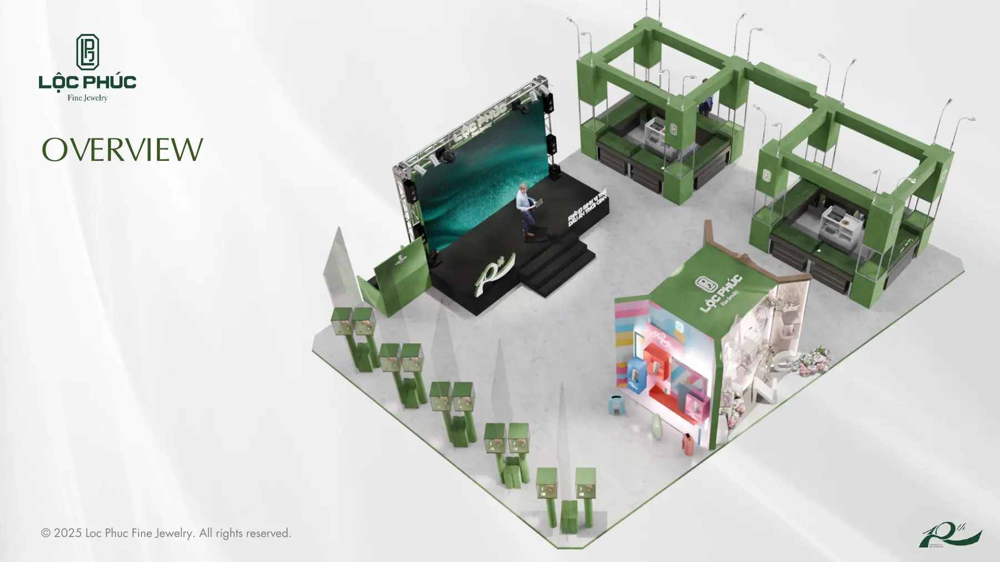
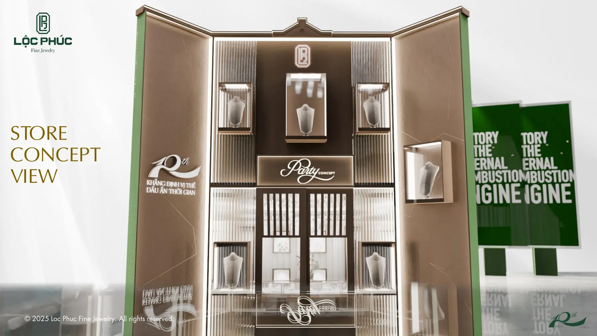

Studio 3D tại Việt Nam: thuê trong nước được gì

Studio 3D tại Việt Nam ngày nay dùng cùng bộ phần mềm, cùng thư viện vật liệu và cùng chuẩn kỹ thuật với các nơi ở nước ngoài. Thứ bạn thật sự mua khi thuê trong nước là ba thứ khác: cùng múi giờ để duyệt trong ngày, cùng ngôn ngữ để nói rõ cái sai, và khả năng cầm được sản phẩm mẫu thật trước khi dựng. Nếu việc của bạn cần ba thứ đó, thuê trong nước gần như luôn hợp hơn.
Bài này viết cho người đang đi tìm nơi làm hình: cách phân biệt ba nhóm nhà cung cấp trong nước, khi nào nên thuê studio 3D làm key visual thay vì làm ảnh lẻ, những điểm yếu có thật của thị trường trong nước, và bộ câu hỏi nên hỏi trước khi ký. Chúng tôi là một studio 3D ở Việt Nam nên có phần thiên vị, vì vậy phần nhược điểm sẽ được viết thẳng chứ không né.
Studio 3D tại Việt Nam khác gì so với thuê ngoài nước
Khoảng mười năm trước, câu trả lời nằm ở công nghệ. Bây giờ thì không. Blender, Cycles, thư viện vật liệu và máy render đám mây đều có sẵn cho mọi người ở mọi nơi, nên khoảng cách kỹ thuật thuần túy đã hẹp lại rất nhiều.
Khoảng cách còn lại nằm ở vận hành. Một vòng duyệt với đối tác lệch sáu tới bảy múi giờ thường mất trọn một ngày làm việc, vì bạn gửi phản hồi lúc chiều thì bên kia mới bắt đầu buổi sáng. Cùng một vòng duyệt đó với một nhóm trong nước có thể xong trong vài giờ. Với dự án ba vòng duyệt thì khác biệt là vài ngày, với dự án mười vòng thì khác biệt là vài tuần.
Thứ hai là ngôn ngữ. Mô tả một cái sai về ánh sáng bằng tiếng mẹ đẻ chính xác hơn nhiều so với mô tả bằng ngoại ngữ. Câu nói kiểu nhìn hơi nặng, hơi bị cũ, hơi giống hàng chợ là những phản hồi rất thật mà rất khó dịch.
Thứ ba là sản phẩm mẫu. Nhiều loại hàng chỉ dựng đúng được khi có món thật trong tay để soi bề mặt, đo chi tiết và chốt màu dưới đèn thật. Gửi một món hàng đi nước ngoài vừa chậm vừa tốn, và nhiều mặt hàng không gửi được.
Ba nhóm nhà cung cấp trong nước và việc hợp với từng nhóm
Gọi chung là studio 3D nhưng thị trường trong nước có ít nhất ba nhóm, với cách tính giá và mức rủi ro khác hẳn nhau.
| Nhóm | Mạnh ở | Rủi ro chính | Hợp với việc |
|---|---|---|---|
| Freelancer | Giá gọn, phản hồi nhanh, linh hoạt | Một người bận là cả việc dừng | Một tới ba hình, yêu cầu đã rõ |
| Studio nhỏ | Có quy trình duyệt, có người thay thế | Nhận quá nhiều việc cùng lúc | Bộ hình nhiều góc, có lịch chiến dịch |
| Agency lớn | Điều phối nhiều hạng mục, hồ sơ đầy đủ | Chi phí quản lý cộng vào giá | Chiến dịch lớn, nhiều kênh cùng chạy |
| Đội trong nhà | Hiểu sản phẩm, làm được việc nhỏ hằng tuần | Khó đạt mức key visual ngay | Thương hiệu ra hình liên tục quanh năm |
Dòng cuối đáng chú ý với các thương hiệu ra hình đều đặn. Giữ một người trong nhà lo phần ảnh nền trắng và ảnh biến thể, rồi thuê ngoài phần hình chủ đạo, thường tiết kiệm hơn thuê ngoài toàn bộ. Cách so ba nhóm đầu trên cùng một bảng tiêu chí được viết kỹ hơn trong bài studio 3D là gì và chọn thế nào, còn nếu bạn muốn dựng đội trong nhà thì đầu ra từng giai đoạn nằm ở bài khoá học dựng hình sản phẩm.

Khi nào nên thuê studio 3D làm key visual
Key visual là hình chủ đạo của một chiến dịch, thứ xuất hiện trên biển lớn, trên trang chủ và trên bài chạy quảng cáo. Nó khác ảnh sản phẩm thông thường ở chỗ phải chịu được việc phóng to, phải đọc được khi thu nhỏ và phải đứng vững cạnh các thương hiệu khác trong cùng một không gian.
Ba trường hợp nên thuê ngoài
- Sản phẩm chưa sản xuất xong nhưng chiến dịch đã có ngày chạy. Dựng 3D là cách duy nhất có hình trước khi có hàng.
- Cần nhiều phiên bản màu, nhiều dung tích hoặc nhiều kiểu bao bì từ cùng một bố cục. Chụp thật phải làm lại từ đầu mỗi lần, mô hình 3D thì đổi vật liệu rồi render lại.
- Hình phải dùng được ở cả khổ dọc, khổ ngang và khổ vuông. Dựng một cảnh 3D rồi cắt nhiều tỉ lệ rẻ hơn nhiều so với tổ chức ba buổi chụp.
Hai trường hợp nên cân nhắc lại
- Món hàng đã có sẵn, chỉ cần vài ảnh nền trắng đơn giản. Chụp thật thường nhanh hơn và giống thật hơn.
- Ngân sách chỉ đủ cho một vòng sửa. Key visual gần như luôn cần ít nhất hai vòng, và cắt chỗ này là cắt vào thứ quyết định chất lượng cuối.
Cách tính tiền cho hai nhóm việc này khác nhau rõ rệt, và cả hai đều được bóc theo hạng mục chứ không theo một con số gọn. Phần bóc hạng mục nằm trong bài báo giá dựng 3D sản phẩm, còn các mốc giao nhận của một bộ ảnh tĩnh thì ở bài dịch vụ render 3D sản phẩm.
Thuê trong nước hay thuê nước ngoài không phải câu hỏi về chất lượng nữa. Nó là câu hỏi về số vòng duyệt bạn cần và tốc độ bạn cần chúng quay vòng.
Những điểm yếu có thật của studio 3D trong nước
Phần này nên nói thẳng, vì người đi thuê gặp đủ rồi và không ai được lợi khi nó bị giấu đi.
Nhận quá nhiều việc cùng lúc. Đây là vấn đề phổ biến nhất ở nhóm freelancer và studio nhỏ. Việc chồng việc dẫn tới trễ lịch và tới những vòng sửa làm cho xong. Cách phòng là hỏi thẳng lịch hiện tại và yêu cầu ghi ngày giao từng mốc vào hợp đồng.
Portfolio không khớp với việc của bạn. Một nhóm giỏi dựng nội thất chưa chắc dựng tốt đồ kim loại bóng hay chất lỏng. Hãy xem phần portfolio đúng nhóm sản phẩm của bạn, và nếu không có thì hỏi xem họ đã làm chất liệu đó bao giờ chưa.
Quy trình duyệt không rõ ràng. Nhiều nơi làm tốt phần kỹ thuật nhưng không có bước duyệt bố cục trước khi render. Hậu quả là bạn chỉ thấy hình ở bước cuối, khi sửa đã rất tốn.
Không nói gì về quyền sử dụng và file gốc. Phần này hay bị bỏ qua cho tới khi bạn cần dùng lại mô hình cho chiến dịch sau. Hỏi và ghi rõ ngay từ đầu.
Bộ câu hỏi nên hỏi trước khi ký
Danh sách dưới đây dùng được cho cả ba nhóm nhà cung cấp. Một nơi làm việc chỉn chu sẽ trả lời được hết trong một buổi trao đổi.
- Đã làm nhóm sản phẩm và nhóm chất liệu giống của tôi chưa, cho xem hai ví dụ.
- Quy trình có bước duyệt bố cục và duyệt ánh sáng trước khi render không.
- Bao nhiêu vòng sửa đã nằm trong giá, và thứ gì tính là việc mới.
- Ai là người trực tiếp làm, và nếu người đó bận thì ai thay.
- Giao hình ở định dạng nào, độ phân giải nào, có giao bản cắt nhiều tỉ lệ không.
- File dựng gốc có được giao không, nếu có thì tính thêm bao nhiêu.
- Quyền sử dụng hình trong bao lâu và trên những kênh nào.
- Nếu cần sản phẩm mẫu thì gửi về đâu, ai chịu chi phí vận chuyển.
- Lịch hiện tại đang nhận bao nhiêu việc, ngày sớm nhất bắt đầu được là ngày nào.
Hai câu cuối trông như thủ tục nhưng lại là nơi phần lớn dự án trượt tiến độ. Nếu việc của bạn là một chương trình chứ không phải một món hàng, bộ câu hỏi cần thêm phần mặt bằng và hạng mục thi công, viết trong bài phối cảnh sự kiện 3D. Còn nếu đầu ra là vài giây chuyển động, các mốc duyệt lại khác hẳn và nằm ở bài quy trình dựng TVC 3D.
Cách làm việc từ xa cho gọn
Phần lớn khách của một studio 3D ở Việt Nam không ngồi cùng thành phố, và điều đó hoàn toàn bình thường nếu ba thứ sau được chốt trong tuần đầu.
Một kênh trao đổi duy nhất
Phản hồi nằm rải ở tin nhắn riêng, nhóm chat và thư điện tử là nguyên nhân số một của việc sửa sai chỗ. Chọn một nơi, mọi phản hồi ghi vào đó, kể cả phản hồi nói miệng trong cuộc gọi.
Lịch duyệt có ngày cụ thể
Không phải duyệt khi nào xong, mà là ngày nào duyệt bố cục, ngày nào duyệt ánh sáng, ngày nào duyệt hình cuối. Có ngày thì cả hai bên biết mình đang chậm hay đúng hẹn.
Một người duyệt cuối
Nhiều người góp ý là tốt, nhưng phải có một người gom lại và chốt. Năm người cùng quyền yêu cầu sửa là cách chắc chắn nhất để một bộ hình đi lòng vòng.
Với các dự án dài, chúng tôi thường gửi hình xám chưa có vật liệu ở vòng đầu. Nhìn thì đơn sơ nhưng chính bước đó giúp chốt bố cục trước khi tốn giờ render, và giảm được phần lớn các vòng sửa nặng về sau.
Vậy nên thuê studio 3D tại Việt Nam khi nào
Gọn lại thành bốn trường hợp: khi bạn cần nhiều vòng duyệt và cần chúng quay vòng trong ngày, khi món hàng cần được cầm thật để dựng đúng, khi phản hồi của bạn khó diễn đạt bằng ngoại ngữ, và khi bạn muốn giữ quan hệ làm việc dài hạn để lần sau không phải giải thích lại từ đầu. Nếu việc của bạn không rơi vào bốn nhóm này, thuê ở đâu cũng được, và lúc đó hãy chọn theo portfolio chứ đừng chọn theo địa lý.
Câu hỏi thường gặp về studio 3D tại Việt Nam
Thuê studio 3D tại Việt Nam có rẻ hơn thuê nước ngoài không?
Thường là rẻ hơn ở cùng một khối lượng, nhưng đó không phải lý do chính nên chọn. Lý do chính là cùng múi giờ, cùng ngôn ngữ và khả năng cầm được sản phẩm mẫu thật. Khoảng chênh lệch giá là ước lượng theo thị trường và thay đổi theo từng loại việc, nên đừng lấy nó làm căn cứ duy nhất để quyết định.
Studio 3D trong nước có làm được hình đạt chuẩn quảng cáo quốc tế không?
Có, ở nhóm việc họ đã làm nhiều. Phần mềm, thư viện vật liệu và máy render ngày nay gần như giống nhau ở mọi nơi, nên khác biệt nằm ở số lần một nhóm đã làm đúng loại sản phẩm của bạn. Hãy xem portfolio theo nhóm sản phẩm chứ không xem theo tổng số dự án.
Nên chọn freelancer, studio nhỏ hay agency lớn?
Tùy quy mô việc và mức rủi ro bạn chịu được. Freelancer hợp với một tới ba hình và yêu cầu rõ. Studio nhỏ hợp với bộ hình nhiều góc, có lịch duyệt và cần người thay thế khi một người bận. Agency hợp khi hình chỉ là một phần của chiến dịch lớn cần điều phối nhiều hạng mục.
Làm việc từ xa với studio 3D ở tỉnh khác có ổn không?
Ổn, với điều kiện chốt được ba thứ ngay từ đầu: một kênh trao đổi duy nhất, một lịch duyệt có ngày cụ thể, và cách gửi sản phẩm mẫu nếu món hàng cần nhìn thật. Phần lớn trục trặc trong các dự án từ xa đến từ việc phản hồi nằm rải rác ở nhiều nơi, không phải từ khoảng cách địa lý.
Studio 3D có giữ file gốc của dự án không?
Mặc định của phần lớn nơi là giao hình cuối, còn file dựng thì giữ lại. Nếu bạn muốn dùng lại mô hình cho các chiến dịch sau thì phải ghi điều đó vào hợp đồng từ đầu, vì đòi sau khi chốt giá rất khó và thường phải trả thêm một khoản không nhỏ.
Nếu bạn đang chọn nơi làm hình, gửi cho chúng tôi danh sách ảnh cần giao, nơi ảnh sẽ xuất hiện và ngày duyệt nội bộ. Chúng tôi báo lại theo từng hạng mục và nói thẳng nếu chụp thật hoặc một nhóm khác hợp hơn cho việc của bạn. Muốn xem chúng tôi làm gì trước khi hỏi thì dự án render 3D sản phẩm và dự án phối cảnh sự kiện 3D là chỗ nên bắt đầu, còn danh mục đang nhận nằm ở trang dịch vụ 3D cho thương hiệu.
Đọc tiếp


Muốn được sửa bài trực tiếp?
Coaching 1:1 online, đồng hành trọn một năm. Để lại thông tin, tôi xem qua và tư vấn bạn nên bắt đầu từ đâu.
Đăng ký tư vấn